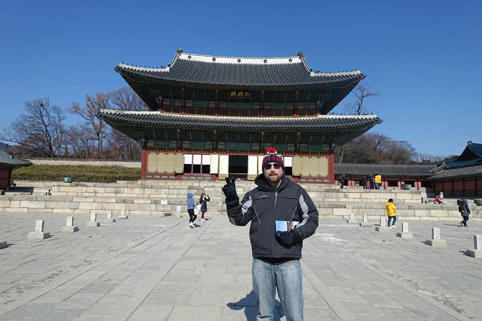

 I love to travel. I have been to 10 different countries. One World Cup in Brazil, and one Winter Olympics in South Korea. I enjoy sports, hiking, reading, and gaming. I grew up in New England and have lived in Connecticut, Massachusetts, and Rhode Island before moving to Phoenix, Arizona. I have been married since 2010 and have two fat fur babies named Samson and Frost.